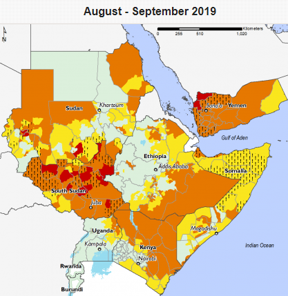
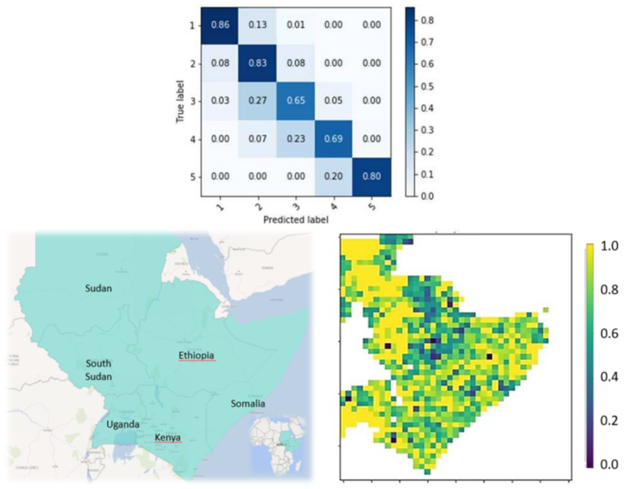

PREFECT
Deep Learning Ansätze für Food Insecurity
-
Problemstellung
- Fews Administrative in Zusammenarbeit mit US Aid, http://fews.net/data, zuletzt besucht am 20. Februar (2020).
- L. Zhang, B. Du: Deep Learning für Fernerkundungsdaten: ein technisches Tutorium zum Stand der Technik. IEEE Geosci. Fernerkundung. Mag. 4, 22-40, DOI: 10.1109/MGRS.2016.2540798, (2016).
- R. Interdonato, D. Ienco, R. Gaetano, K. Ose, DuPLO: A DUal view Point deep Learning architecture for time series classificatiOn, ISPRS Journal of Photogrammetry and Remote Sensing 149, 91-104, DOI: 10.1016/j.isprsjprs.2019.01.011, (2019).
- F. Sarracino: Erklärende Hungersnöte: Eine kritische Überprüfung der Hauptansätze und weiterer kausaler Faktoren, NAF International Working Paper serie, Nr. 10/02, (2010).
- M. Ravallion: Hungersnot und Wirtschaft Oxfam: Causing Hunger (Ein Überblick über die Nahrungsmittelkrise in Afrika), (2006). M. J. Cohen, D. Reeves.
- M. J. Cohen, D. Reeves Ursachen des Hungers, International Food Policy Research Institute, 2020 Brief 19, Mai 1995, (1995).
- O.B. Akpomuvie, Ph.D.: Die Menschen - Ernährungsproblem in Afrika: The Quest for Food Security, Internationale Zeitschrift für Geistes- und Sozialwissenschaften, Band 1 Nr. 19; Dezember 2011, (2011).
Hilfsorganisationen und Regierungen unternehmen große Anstrengungen, um die negativen Auswirkungen von durch Ernährungsunsicherheit verursachten Krisen wie Hungersnöte oder Massenmigration zu lösen. Eine der begrenztesten Ressourcen, mit denen diese Akteure konfrontiert sind, ist der Mangel an Vorbereitungszeit für eine konsistente und nachhaltige Planung der Nothilfe wie die Einrichtung von Flüchtlingslagern oder die Sicherung der Versorgung mit Nahrungsmitteln und Energie. Daher ist die Verlängerung der Vorbereitungszeit ein wesentlicher Schritt, der zur Rettung vieler Leben führen kann. Ziel des Prefect Projekts ist es, die Vorlaufzeit durch die Entwicklung eines auf maschinellem Lernen basierenden Prognosemodells zu verlängern, das in der Lage ist, die Wahrscheinlichkeit für nahrungsunsichere Gebiete zu berechnen, indem es aus historischen Daten lernt. Anschließend wird die Vorhersagegenauigkeit des Modells validiert. Sobald die Genauigkeit des Modells eine gute Vorhersage der Validierungs- und Testdatensätze erlaubt, können reale Vorhersagen über die Wahrscheinlichkeit einer Hungersnot berechnet werden.
Ansatz Deep Learning
Zur Durchführung solcher Berechnungen wird unser, auf einem Deep Learning Ansatz basiertes, Prognosemodell auf der Grundlage historischer Open-Access-Daten für das Horn von Afrika(2009-2018) entwickelt und trainiert. Wir verwendeten Daten zu Niederschlag, Bodenfeuchte und Vegetation, die durch Fernerkundung gewonnen wurden, sowie sozioökonomische, medizinische Daten, Daten zu bewaffneten Konflikten und Katastrophen. Um räumliche Inkonsistenzen in den Eingabedaten zu überwinden und die Anforderungen an eine räumlich homogene Eingabe für neuronale Netze zu erfüllen, wurden alle Daten in georeferenzierte Rasterkarten umgewandelt. Die Daten zu Katastrophen und bewaffneten Konflikten wurden an die Distrikte angepasst, während die Preise auf dem lokalen Lebensmittelmarkt durch einen Inverse Distance Weighting Ansatz interpoliert wurden. Als Kennzeichnungswert für die Ernährungssicherheit wurde der IPC (Integrated Phase Classifier) mit Werten von 1 (Allgemeine Ernährungssicherheit) bis 5 (Hungersnot) verwendet. Beispielwerte sind für die Monate August bis September 2019 in der folgenden Abbildung dargestellt.

Zur Modellierung wurde ein Deep Learning Ansatz verwendet [2]. Während wir in einem ersten
Ansatz mit einem einfachen Neuronalen Netz begonnen haben zu modellieren, versuchen wir nun, Convolutional Neural Networks (CNNs) und
Recurrent Neural Networks (RNNs) zu kombinieren, wie von Interdonato et al. vorgeschlagen [3]. Dadurch können wir beide Stärken
kombinieren, wie z.B. die räumliche Autokorrelation der CNNs und die Fähigkeit, auf zeitliche Abhängigkeiten in Fernerkundungsdaten durch
RNNs zu reagieren. Mehrere Feature Selection Analysen wurden auf die gesammelten Daten angewendet, wie Multikollinearität, Cluster- und
Hauptkomponentenanalysen, um die Dimensionalität des Merkmalsraums zu reduzieren. Damit wurde jedem Pixel in den Rasterkarten
vom Horn von Afrika ein 56-dimensionaler Merkmalsvektor zugeordnet. Das Horn von Afrika berechnen wir zurzeit mit einer Auflösung
von 40x47 Pixeln . Die Evaluierung unserer Methode wurde unter Verwendung von Kreuzvalidierung sowie von Metriken wie F1-Score, OA und MCC durchgeführt.
Bisherige Ergebnisse und Schlussfolgerung
Die bisherigen Forschungsarbeiten liefern wertvolle Erkenntnisse über die Möglichkeiten, die die Daten zur Analyse und Klassifizierung einer komplexen Katastrophe wie einer Hungersnot bieten. Es scheint einen möglichen Weg zu geben, die Ernährungssituation in Hochrisikoländern mit Hilfe offener Daten zu bewerten und zu klassifizieren. In einigen Fällen überschneiden sich unsere Ergebnisse mit den Ergebnissen in der einschlägigen Literatur [4,5,6,7]. Unser Feature Engineering Prozess und insbesondere die Clusteranalysen und die PCA haben schon gezeigt, dass die einflussreichsten Faktoren Naturkatastrophen und Epidemien sind, die gefährdete Staaten wie die Länder der Sahelzone und des Horns von Afrika treffen können. Darüber hinaus förderte die Clusteranalyse Einblicke in die zugrundeliegende Systematik und ermöglicht es, mehrere Länder als gepoolte Daten auch auf nationaler Ebene weiter zu untersuchen. Es scheint möglich zu sein, Länder oder regionale Distrikte auf der Grundlage ökonometrischer Cluster zu kategorisieren, wie z.B. Länder oder regionale Distrikte mit hoher Verschuldung/niedrigem Einkommen oder Länder mit niedrigem mittleren Einkommen. Mit Hilfe des Neuronalen Netzes wurden bisher ebenfalls recht ermutigende Ergebnisse für die IPC-Klassifikation erzielt. Die unterne Abbildung (oberes Bild) zeigt die erreichten F1-Werte pro Label. Da die verfügbaren Daten unter einem gravierenden Ungleichgewicht der IPC Klassen leiden, sind die Ergebnisse für die Labels 3 und 4 nicht besonders genau. Betrachtet man die F1-Werte pro Pixel (untere linke und rechte Bilder in der Abbildung), so sind im Vergleich große weiße Flächen zu erkennen, die aufgrund der sehr spärlichen Datenlage zunächst aus der Berechnung ausgeschlossen werden mussten. Die gelben Pixel zeigen eine sehr hohe Vorhersagegenauigkeit, die dunkeln eine sehr niedrige. Hier liegt unter anderem der Schwerpunkt unserer zukünftigen Aktivitäten.

Referenzen